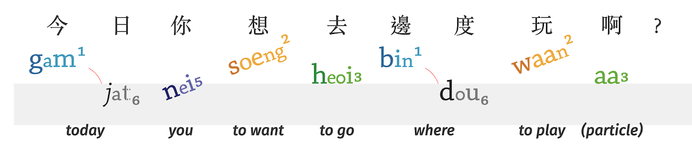

Translate | 翻譯
English ⇄ 廣東話 ⇄ ping³ jam¹
* ping³ jam¹, pronounced "ping yum", represents "romanized spelling (拼音)"
English (英文) ⇄ 廣東話 (Cantonese)
Microsoft's Bing Translator can translate English to 廣東話 (Cantonese).
Microsoft's Bing Translator can also translate 廣東話 (Cantonese) to English.
- Allows you to input Cantonese or English by Speaking 🗣 (instead of Typing ⌨️).
- Available online on the Web, as an Android App, and as an iPhone App.
- ⚠ Microsoft does not currently show phonetics (ping³ jam¹).
- ⚠ Translations are not always accurate.
(Microsoft will attempt to translate into Oral Cantonese (口語)*. However, it sometimes falls back onto Literary Chinese / Mandarin Grammar (書面語)*)
English (英文) ← 廣東話 (Cantonese) → ping³ jam¹
Cantonese Sheik has a Parser to convert individual Cantonese characters (漢字 | hon³ zi⁶) into Jyutping and English.
HamBaangLaang creates Cantonese stories and learning materials for kids. Their Graphical Cantonese Generator converts 廣東話 into Images with 廣東話 + Jyutping + English.

- Note: To get English words, press ‘Segment’ before pressing ‘Generate’.
- (Their other software tools include fonts and a grader.)
廣東話 (Cantonese) → ping³ jam¹
Cantonese sounds can be written. This transliteration is known as ping³ jam¹ 拼音 (or pinyin). Methods of spelling Cantonese include Jyutping, Yale Romanization, and the International Phonetic Alphabet.
Chinese Converter has many Cantonese conversion tools.
- Converts 廣東話 to Jyutping (jyut6 ping3 | 粵拼)
Hong Kong Vision has several conversion tools and dictionaries.
- Converts 廣東話 to Jyutping (jyut6 ping3 | 粵拼)
- Converts 廣東話 to Yale (yèh lóuh | ye4 lou5 | 耶魯拼法)
- Converts 廣東話 to Cantonese Pinyin (gaau3 jyn6 sik7 ping3 jam1 fong1 on3 | 教院式拼音方案)
- Converts 廣東話 to Sidney Lau Romanisation (lau4 sek3 cheung4 ping3 yam1 | 劉錫祥拼音)
- Converts 廣東話 to Guangdong Romanisation (guong2 dung1 ping3 yem1 fong1 on3 | 廣東拼音方案)
Easy Pronunciation is a paid service that offers phonetic translators and recordings. The free version is limited to converting 25 characters. To convert more characters, it costs 75 HKD (8 £) per month, or 230 HKD (25 £) for lifetime access.
- Converts 廣東話 to Jyutping (ping³jam¹)
- Converts 廣東話 to Yale (pingyām)
- Converts 廣東話 to IPA (pʰeŋ³jɐm¹ | pʰe̟ŋjɐ̄m)
廣東話 (Cantonese) ← ping³ jam¹
There are several Ping³jam¹ (pinyin) input methods for Cantonese. Different devices have different options.
Footnotes
* "Cantonese" can refer to either 廣東話 (gwong² dung¹ waa² | 'lingo of Guangdong'), or 粵語 (jyut⁶ jyu⁵ | 'lingos of the Yue').
* "Oral Cantonese 口語" (aka Native, Vernacular, Colloquial) is what most people think of as "Cantonese". "Literary 'Cantonese' 書面語" (aka Formal, Standard) is more akin to Mandarin. Both can be written or spoken, however "Literary 'Cantonese'" is almost never spoken out loud.
If you have any questions or suggestions, please contact us at: cantonese.tools@gmail.com